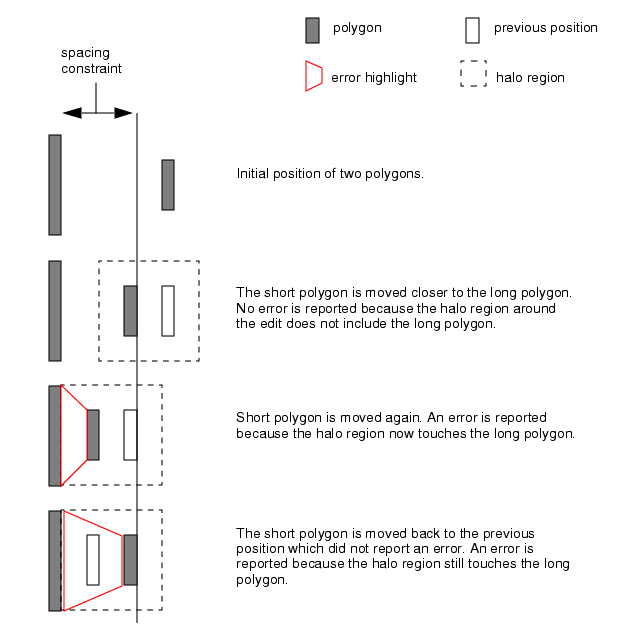

Inconsistent Results from Run DRC on Edit Mode with Small Halo Size
You may see
inconsistent error reporting when Calibre RealTime is run in Run
DRC on Edit mode with a small halo size. In particular, this can
occur if the halo size is smaller than a spacing constraint being
checked. The Run DRC on Edit mode is not available in all integrations.
The effect of a small halo size is illustrated in the following figure, where a polygon is moved closer to a second polygon, then away again.
Figure 1. Results from Run DRC on Edit
Mode with Small Halo Size

Do one or both of the following to make sure that you see all errors:
Increase the halo size to be equal or greater than the spacing constraint being checked. The halo size is set in the Calibre RealTime Options dialog box (
 button).
button).Run a window check after completing a series of design edits (
 or button). Note:
or button). Note:If text attached to a polygon is processed as part of a rule check, the text attachment point must be within the halo region for the text to be processed.